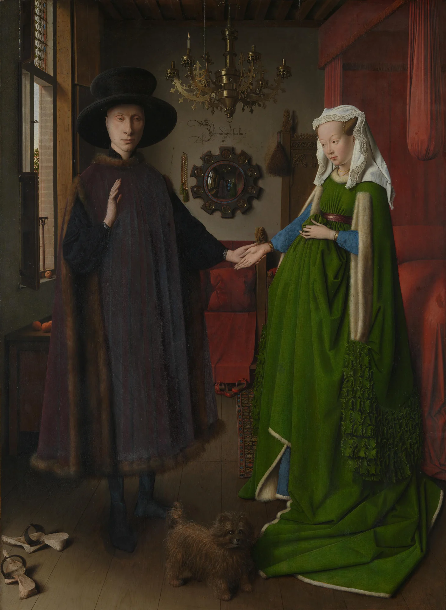
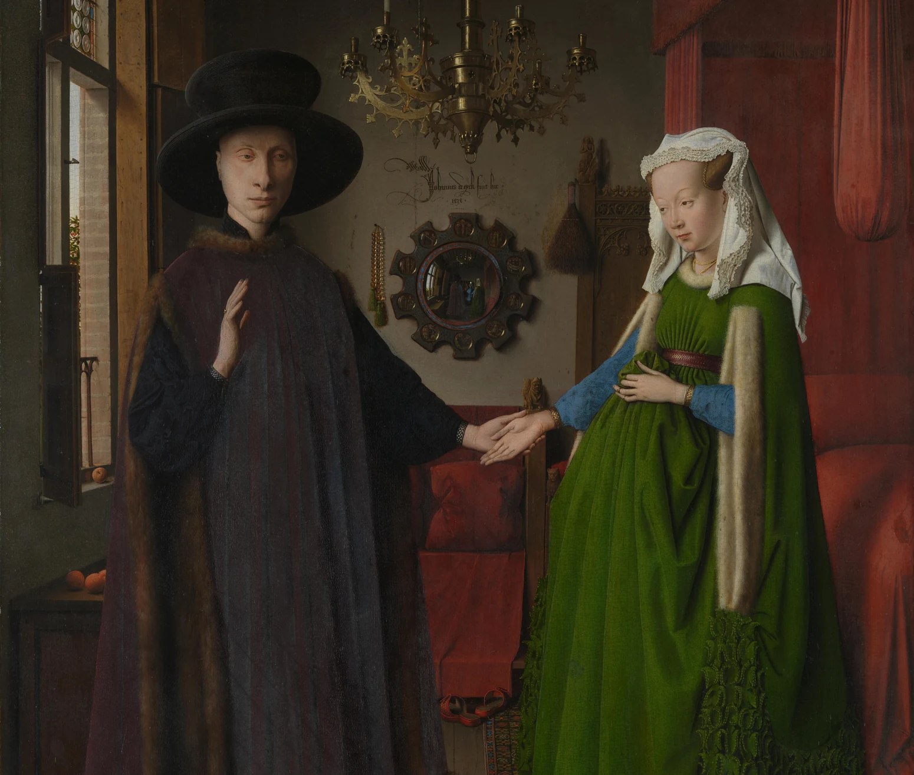
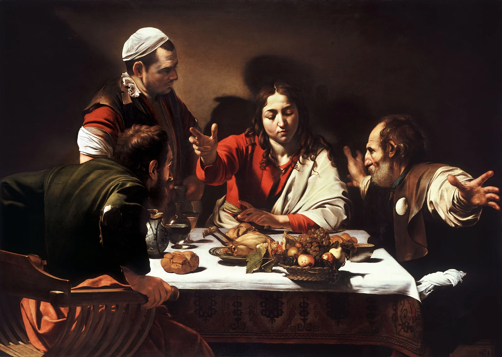
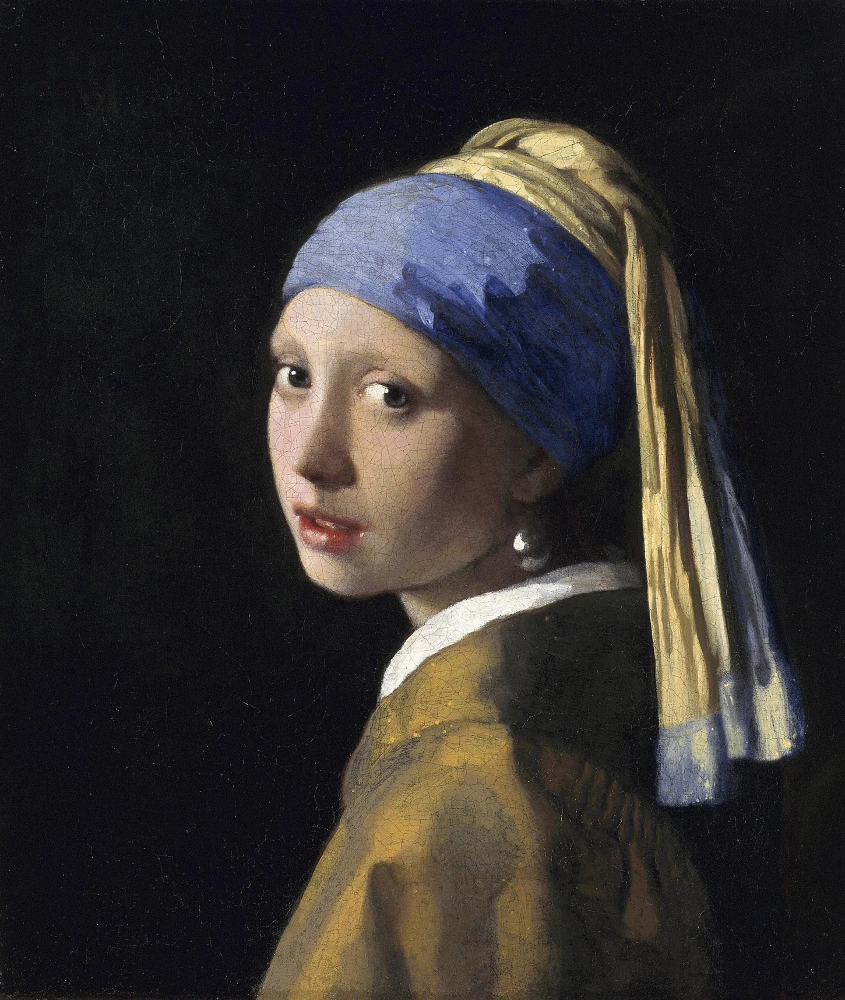
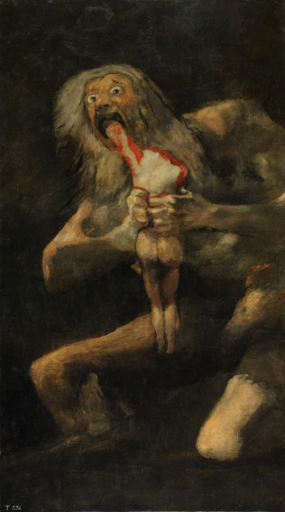

O Retrato dos Arnolfini
Quem aparece no espelho?

Mistérios da história da arte
Um espelho, um gesto, um brilho na sombra. Explore os detalhes que mudam a forma de ver uma pintura.
Acervo
Escolha uma obra e siga as pistas dentro da pintura.

Quem aparece no espelho?

Por que a cesta parece prestes a cair?

O que faz duas pinceladas parecerem uma joia?

Por que essa cena estava na parede de uma casa?
Sobre o museu
O Museu da Meia-Noite é uma galeria digital sobre as histórias e os mistérios da pintura. Cada investigação começa com algo que você pode ver na própria obra e segue até o que a história da arte ajuda a explicar.
Quando há mais de uma interpretação, você encontra as hipóteses e as fontes para continuar a investigação.
Voltar ao acervo